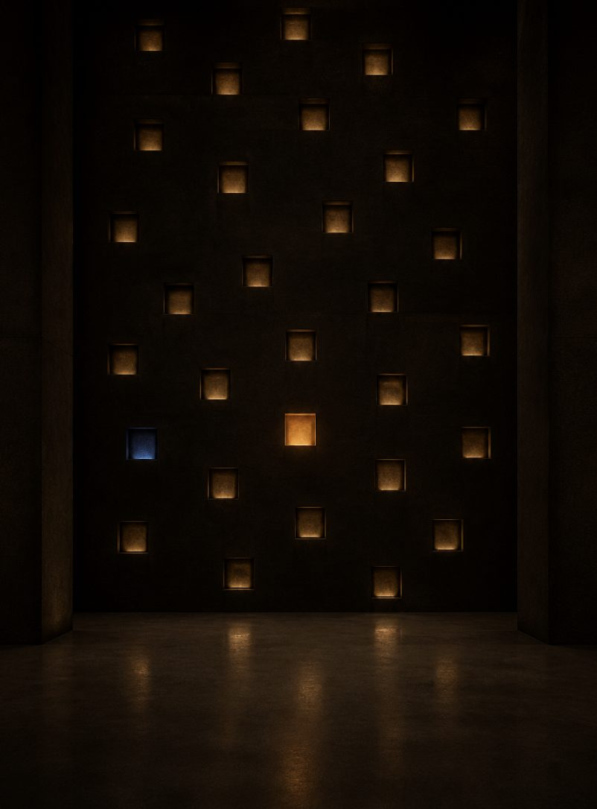

The Library
The founder’s voice, kept working. Sunday homilies, teaching series and the meditations he recorded, being cleaned, titled and gathered in one place for the first time.

~17 hof Sunday homilies
7–8 hteaching series, including Success: Full Living
22meditation albums on CD and MP3
3volumes: Full Living, Full Relating, Full Thinking
An introduction to the Hermitage · Friar Justin · the first library set arrives mid-October
Chapters
Each recording will open with chapters, so you can find the moment you are looking for. Transcripts will make every homily searchable.
- 00:00Welcome
- —Chapters come with the cleaned video
Homilies & teachings
Free to watch. The guided series live in the meditation library.